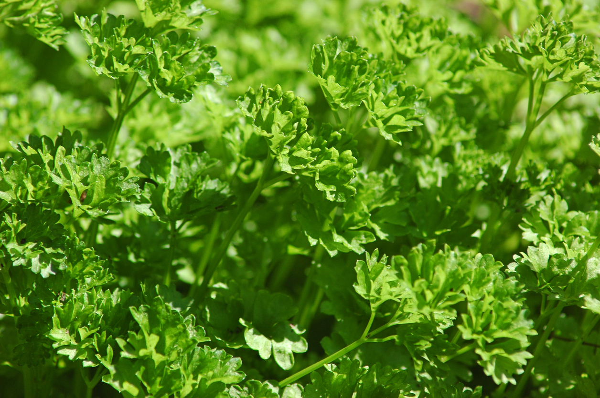
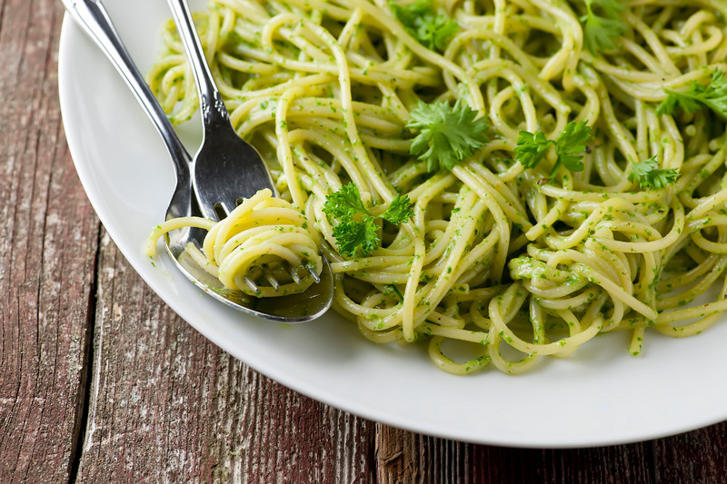

Parsley
A flowering plant native to the Mediterranean
Parsley—curly or flat-leafed—is an easy-growing, nutrient-packed herb, planted as both annual and biennial depending on climate.

light_mode
Sun explosure
Partial
water_drop
Water
Well-drained
straighten
Spread
6''-8''
height
Height
18''-24''
today
Lifespan
Biennial
Tips for growing:
- Plant in the spring (or in fall in zones 7 and warmer).
- Set plants in rich, moist soil with a pH between 5.5 and 6.7.
- Keep the soil moist by watering thoroughly whenever the top inch is dry.
- Parsley does well in both full-sun and part-sun environments. If you’re planting parsley indoors, be sure to grow it near a sunny window.
- If you’re starting parsley from seed, thin to 9″ apart. If you’re transplanting seedlings or small plants, go ahead and space 9″ apart, as well.
- Plant parsley next to tomatoes, corn, and asparagus.

Recipe: Parsley Pesto Pasta
- Cook pasta according to package directions in heavily salted water. Scoop out a cup of pasta water before you drain it.
- While the pasta is cooking, make the pesto: process the parsley and walnuts until well chopped. Add the cheese and pulse a few times. Now pour the oil through the feeder tube while the processor is running until the pesto is smooth.
- Toss the hot pasta with the pesto, adding the pesto in increments until you have the amount you like on your pasta (you may have some leftover, which is a wonderful thing!). Add a little pasta water until the pasta has a light sauce.
- Serve garnished with a little chopped parsley and fresh ground pepper.